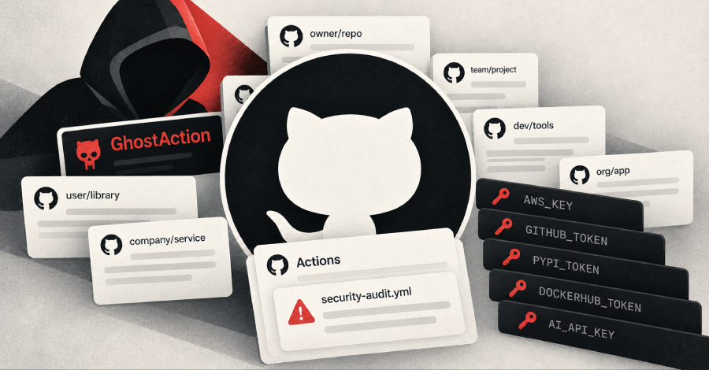

Кампания GhostAction, направленная на инфраструктуру разработчиков на GitHub, впервые была описана в сентябре 2025 года — и, как следует из свежего отчёта GitGuardian, не собиралась умирать. Новый всплеск начался 31 августа 2026 года, а пик пришёлся на 8–9 октября: похищенные данные около 1900 аккаунтов GitHub позволили атакующим нацелиться более чем на 30 000 репозиториев, принадлежащих 3000 пользователей и организаций. Всего злоумышленники попытались извлечь 3174 секрета из CI-конфигураций публичных проектов. Для сравнения: первая волна новой кампании (с 31 августа по 30 сентября) задела 772 репозитория и мишила 2577 секретов — за неделю масштаб вырос на порядок.
Чтобы получить права на запись в чужие репозитории, атакующие используют украденные персональные токены доступа (PAT) и учётки, вытащенные из логов инфостилеров. Дальше от имени легитимного мейнтейнера в проект коммитится вредоносный файл GitHub Actions, замаскированный под заботу о безопасности: «Security Audit» (security-audit.yml) или «GitHub Actions Security» (github_actions_security.yml). Запущенный воркфлоу выгребает из CI секреты: облачные креды, токены реестров пакетов (npm, PyPI, DockerHub) и API-ключи ИИ-провайдеров. Новая версия вредоносной нагрузки стала методичнее предыдущих: она умеет сканировать всю историю git по регуляркам (ключи AWS, токены GitHub и GitLab, «ИИ-секреты», ключи облаков), а следующая итерация дополнительно захватывала пару строк контекста вокруг найденного AWS-ключа, чтобы тут же подхватить и секретный ключ к нему.
GhostAction — наглядная иллюстрация того, как ИИ-разработка встроилась в цепочку поставок: ключи к моделям и ИИ-сервисам сейчас лежат в CI наравне с облачными креденшелами, и детекторы в редлогах атакующих уже идут отдельной строкой именно по ИИ-секретам. Компрометация пайплайна сегодня даёт не только доступ к коду, но и чужие лимиты и бюджеты у провайдеров моделей — а такие ключи редко ротируют.
GitHub с 9 октября стал блокировать запуск вредоносных workflow, поэтому волны 10 и 12 октября не вынесли ничего. Но сама механика выдаёт ставку атакующих: часть жертв октябрьского всплеска уже компрометировалась в волнах сентября 2025-го и августа 2026-го — значит, ключи после прошлых атак так и не отозвали. Классическая защита от этого не изменилась: двухфакторная аутентификация для мейнтейнеров, минимальные права и TTL у токенов, регулярная ротация секретов в CI и аудит сторонних workflow-файлов в репозитории.